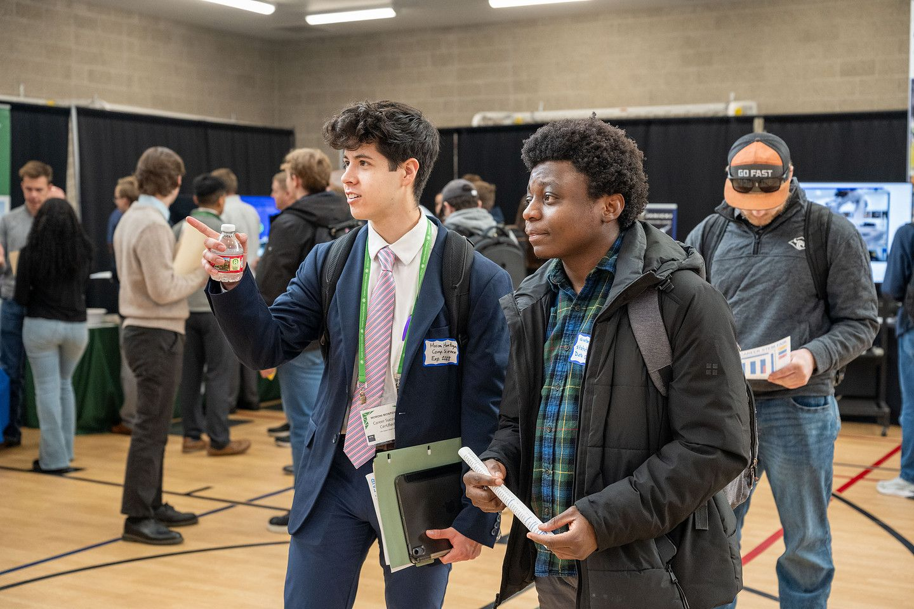
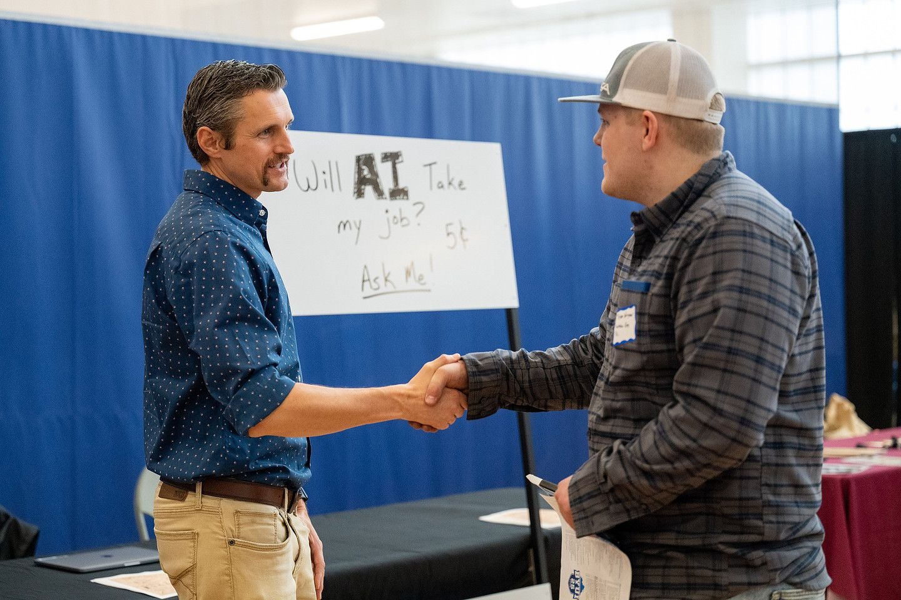

For Parents and Families
Real Skills. Real Growth. A Place with Purpose.
Your student will learn to build technology that matters, alongside people who share your values, at a price that makes sense. Here is an honest look at what that means.


What Your Student Will Learn
Skills That Go beyond Code
Employers hire people who can think, communicate, and work with others. Both majors build those skills from the very first semester.
- Strong Fundamentals: Programming, data structures, and algorithms taught from the ground up, starting the first semester.
- Critical Thinking: Reverse engineering hard problems, testing ideas, and catching the flaws others miss.
- Teamwork: A teamwork course in the second semester, code reviews, and team projects through graduation.
- Communication: An advanced professional writing course and regular presentations.
- Career Preparation: A professional readiness course, a product project, and an internship.
Learning in a Changing World
Real Learning Comes First
Many parents wonder whether new technology will weaken learning or replace the jobs this degree prepares for. Those are fair questions, and they deserve clear answers.
Students still learn to program by hand, starting with the basics, because real understanding is what lets a person judge whether any tool has produced something correct and safe. Instructors set clear expectations for when tools like AI may be used in each course, and students are expected to do their own work and be honest about every tool they use.
Students also study how these tools work, so they graduate able to use them wisely, recognize their limits, and take responsibility for what they build. Read BYU-Idaho’s guidance on academic integrity and AI use.
Please do not let AI replace you in work that would otherwise help you stretch and grow.
Cost and Outcomes
An Investment That Makes Sense
BYU-Idaho is supported by The Church of Jesus Christ of Latter-day Saints, which keeps tuition remarkably low. Here is how cost and outcomes compare.
Tuition per Semester
- Church members
- $2,544
- Non-members
- $5,088
2026–2027 tuition for campus students taking 12 or more credits. Estimated total cost of attendance, including housing and living expenses, is about $8,896 per semester for a single Church member age 18 to 25 living on campus. Source: BYU-Idaho tuition and expenses.
Average Starting Salary
- Computer Science
- $79,787
- Software Engineering
- $74,476
Reported averages from federal Post-Secondary Employment Outcomes (PSEO) data as published on the BYU-Idaho Computer Science and Software Engineering major pages. Starting salary means earnings in the first year after graduation. Earnings vary and are not a guarantee.
Help Paying for School
Scholarships, grants, and campus jobs can lower the cost even further. Explore BYU-Idaho scholarships and other financial aid. Academic scholarships are automatically considered for eligible incoming freshmen, transfer students, and current students; no CSE-specific scholarship was identified in the public CSE materials reviewed.
Faith and Character
Disciples Who Build
BYU-Idaho’s mission is “to develop disciples of Jesus Christ who are leaders in their homes, the Church, and their communities.”
In computing, that looks like integrity in every line of work, care for the people who use what students build, and the humility to keep learning. Students grow in a respectful, faith-centered environment shaped by the Honor Code, weekly devotionals, and faculty who focus on teaching.
…seek learning, even by study and also by faith.
Questions Parents Ask
Straight Answers for Families
Is a Computing Degree Still Worth It?
Yes. New tools have changed how software is written, and they have made strong fundamentals more valuable, not less. Someone still has to research what users need, design the architecture, secure it, and make sure it works. Graduates who can do that, and who can use the newest tools well, remain in demand. We focus on skills that last: Thinking, communicating, and learning quickly.
Will My Student Find a Job?
No university can promise a job, and entry-level hiring in technology is more competitive than it was a few years ago. What we can do is help students graduate with real evidence of their skills: Team projects, a portfolio, an internship, and a professional readiness course that prepares them for interviews.
Can I See My Student’s Grades or Records?
Federal privacy law (FERPA) limits what the university can share with parents of adult students. The best way to stay informed is to talk with your student, who can choose to share information with you.
Where Can My Student Get Help If They Struggle?
Help is never far away. Students can use the CSE drop-in lab in STC 375, free tutoring, Academic Advising, and Counseling Services.
Your Next Step
Visit with Your Student
Walk the campus together, stop by the Wednesday night hangout in the STC quad, and help your student take the next step.